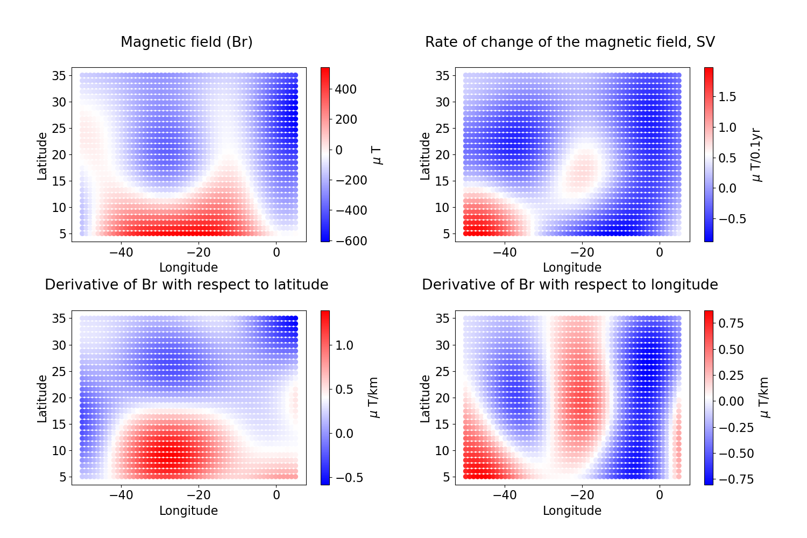
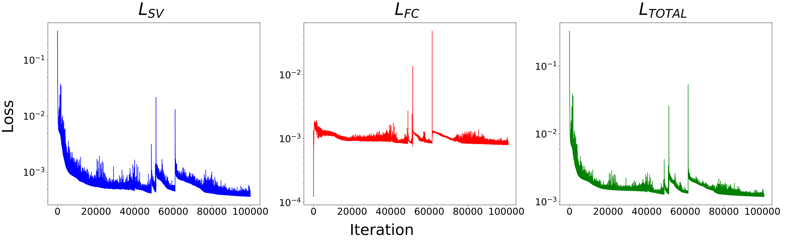
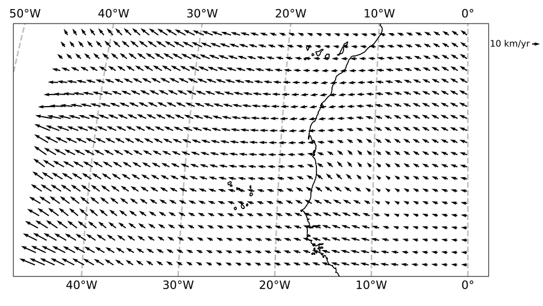

Examples
This is some example code to find the horizontal flow at the CMB in a region underneath the Atlantic. This code (as well as some extra plotting scripts) is also available as a Jupyter Notebook or a Python Script.
Import Modules
import torch
import numpy as np
import matplotlib.pyplot as plt
import pinnflow as pf
import cartopy.crs as ccrs
import cartopy.feature as cfeature
from sklearn.metrics import mean_squared_error
import time
import warnings
warnings.filterwarnings('ignore')
GPU or CPU
The following code snippet allows you to train on a GPU, if you have one, or else defaults to a CPU. GPU training is faster, but CPUs can still be used if this is not available.
device = torch.device("cuda:0" if torch.cuda.is_available() else "cpu")
Loading in data
For this example, we are wanting to study an area in the Atlantic, at spherical harmonic degree 13, on the 1st January 2024. To do this, we will use the CHAOS-8.1 model, but any Geomagnetic Field model can be used if it is in the same format. We then supply the path to the MAT-file, and then use the data_generator function to calculate the values on a grid.
#Path to MAT-File
mat_file = "CHAOS-8.1.mat"
#Loading in data from CHAOS, 1st Jan 2024, degree 13, on a (30,55) grid over the Atlantic.
#Change clat and long variables if you would like to change the region, (dy,dx) if you would like to change the number of points.
radius_data, phi_data, theta_data, Br_data, Br_dot_data, Br_div_theta_data , Br_div_phi_data = pf.data_generator(mat_file, 2024, 1, 1, 13, dy = 30 , dx = 55, clat1 = 55,clat2 = 85, long1 = -50, long2 = 5)
PyTorch requires that each of the input are flattened and in torch.Tensor format, so we do that:
# Flattening grid points
theta = theta_data.flatten()[:,None]
phi = phi_data.flatten()[:,None]
radius = 3485*np.ones(theta.shape)
PHI,THETA = np.meshgrid(phi, theta)
coord = np.hstack((phi.flatten()[:,None], theta.flatten()[:,None]))
# Flattening training data
sv_star = Br_dot_data.flatten()[:, None]
br_star = Br_data.flatten()[:, None]
horiz_theta_star = Br_div_theta_data.flatten()[:, None]
horiz_phi_star = Br_div_phi_data.flatten()[:, None]
#converting to torch.Tensor, if this is not done this will be done in PINNFlow automatically
radius_tf = torch.tensor(radius, requires_grad=True).float()
theta_tf = torch.tensor(theta, requires_grad=True).float()
phi_tf = torch.tensor(phi, requires_grad=True).float()
br_tf = torch.tensor(br_star, requires_grad=True).float()
sv_tf = torch.tensor(sv_star, requires_grad=True).float()
horiz_theta_tf = torch.tensor(horiz_theta_star, requires_grad=True).float()
horiz_phi_tf = torch.tensor(horiz_phi_star, requires_grad=True).float()

Defining Models
We define the blank model from the layers and the upper and lower bound for the coordinate system. The model weights are initialised using Xavier Initialisation.
#Layers for NN, has to start and end with 2 for (theta, phi)
layers = [2, 40, 40, 40, 40, 40, 40, 40, 40, 2]
lb = coord.min(0) #Lower Bound for coordinate system
ub = coord.max(0) #Upper Bound for coordinate system
model = pf.NeuralNet(layers, lb, ub) #Defining blank NN model for T, P
Training
We define the number of training iterations, and empty arrays to record the loss:
Train_iterations = 10000 #can be changed, value used in paper is 100_000 to ensure convergence
loss_record = np.zeros(Train_iterations) #Total Loss
loss_data_record = np.zeros(Train_iterations) #SV Loss
loss_flows_record = np.zeros(Train_iterations) #Flow Constraint Loss
We then train the network using:
tf.rain(Train_iterations, "model_name", radius_tf, phi_tf, theta_tf, sv_tf,
horiz_theta_tf, horiz_phi_tf,br_tf, model,
loss_data_record, loss_flows_record, loss_record)
We can then plot the loss curves using:
plt.rcParams.update({'font.size': 25})
fig, (ax1, ax2,ax3) = plt.subplots(1,3, figsize=(30,10))
ax1.semilogy(loss_data_record, color = 'blue')
ax2.semilogy(loss_flows_record, color = 'red')
ax3.semilogy(loss_record, color = 'green')
ax1.set_title("$L_{SV}$ \n", size = 45)
ax2.set_title("$L_{FC}$ \n", size = 45)
ax3.set_title("$L_{TOTAL}$ \n", size = 45)
fig.supxlabel('Iteration', size = 40)
fig.supylabel('Loss \n', size = 40)
plt.tight_layout(pad=1)

Results
Load in the model with the lowest loss, and then evaluate the trained model values on our grid:
model = torch.load("test_model.pt", weights_only=False) #Loading in 'Best Model'
#evaluating trained model values
u_theta_flat, u_phi_flat, div_flat, sv_flat, tg_flat, cond = pf.PINNFlow(radius_tf, phi_tf, theta_tf, horiz_theta_tf, horiz_phi_tf,br_tf, model).net_sv()
#detaching from cuda, converting to numpy, reshaping to original grid and removing 5 degree border
u_theta = -u_theta_flat.flatten().detach().numpy().reshape(Br_dot_data.shape)[5:-5, 5:-5]*10
u_phi = u_phi_flat.flatten().detach().numpy().reshape(Br_dot_data.shape)[5:-5, 5:-5]*10
sv_pred = sv_flat.flatten().detach().numpy().reshape(Br_dot_data.shape)[5:-5, 5:-5]*1e4
Plotting these results:
